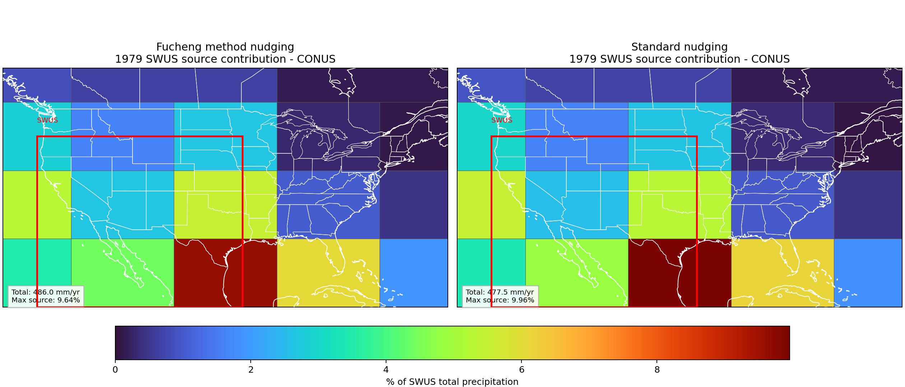
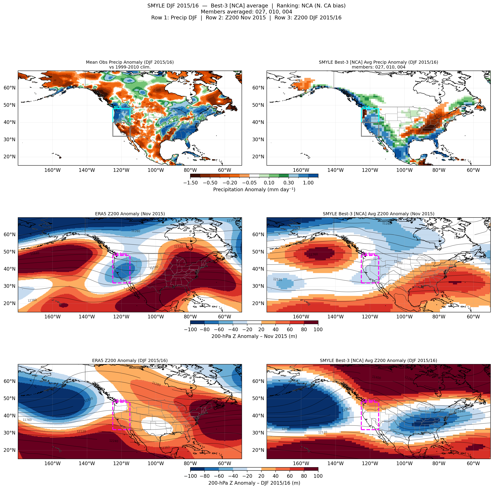
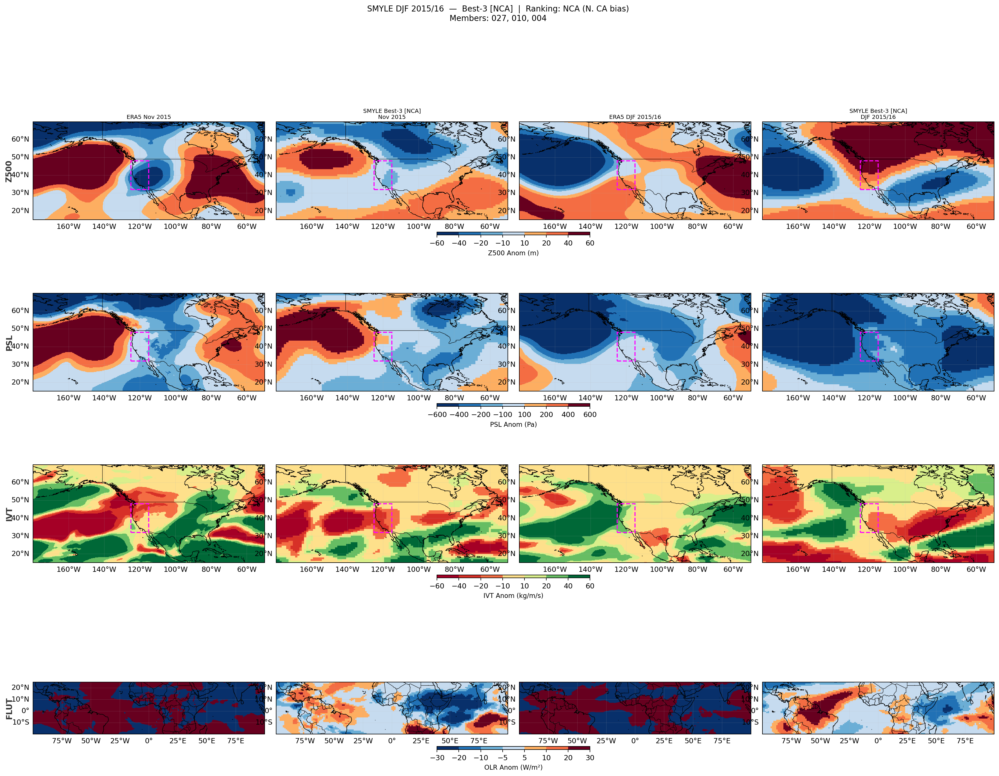
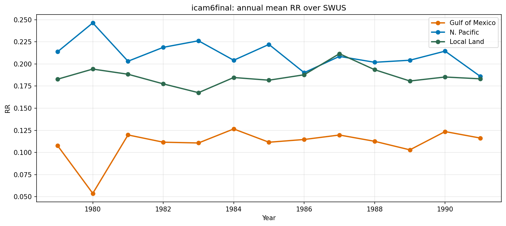
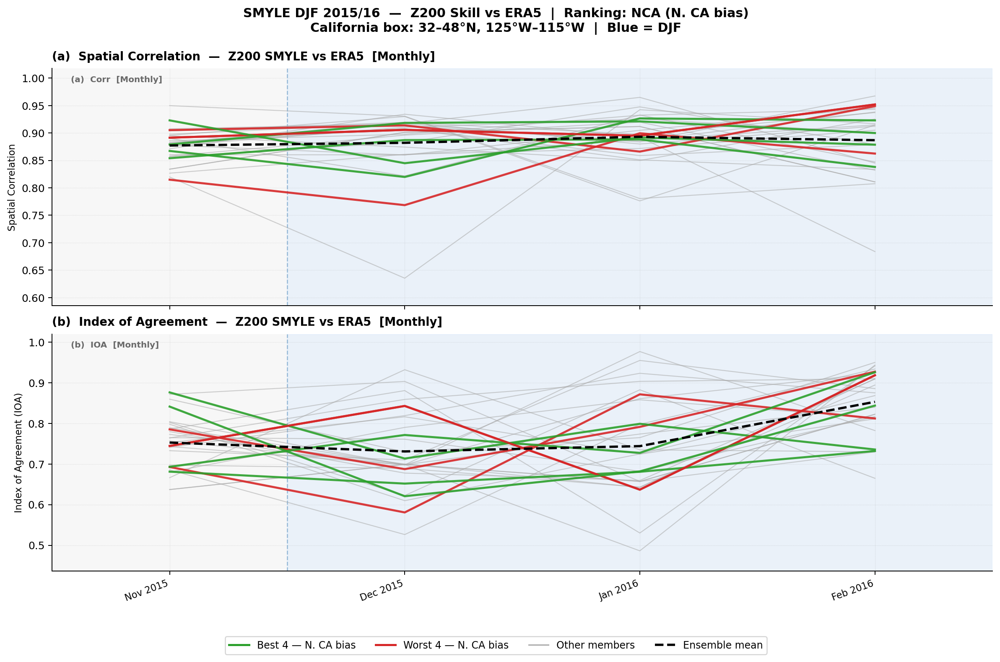

I convert large-scale climate model output and multi-source observational data into validated, decision-ready regional signals — spanning precipitation attribution, ensemble forecast skill, computational fluid dynamics, and deep-learning applications for atmosphere.
I am a Postdoctoral Fellow at the University of Houston, where I received my PhD in Atmospheric Science. My research sits at the intersection of large-scale climate model diagnostics, observational data engineering, and applied machine learning — with a focus on producing validated, reproducible, decision-ready signals from raw atmospheric data.
I work with iCAM6, CESM, ERA5, and a full suite of multi-observational precipitation products (MRMS, IMERG, CPC, GPCC, GPCP, CRU) on NCAR's Derecho HPC system. My Python workflows process tens of terabytes of NetCDF/GRIB output into bias-corrected, area-weighted regional metrics.
Beyond climate model work, my PhD research applied Computational Fluid Dynamics (OpenFOAM LES/DNS) and deep learning to atmospheric dispersion, boundary-layer turbulence, air quality forecasting, and convective dynamics. I have published across Physics of Fluids, Scientific Reports, Earth Systems and Environment, and Science of the Total Environment.
Atmospheric data carries decision-grade information — but only after careful uncertainty quantification, dataset intercomparison, and probabilistic translation. This is what I build.
End-to-end atmospheric data pipelines — from raw model output and observational products to validated regional metrics and quantitative signals.

Isotope-enabled iCAM6 water-tagging diagnostics trace moisture pathways and quantify source-region contributions to Southwest US precipitation across a 35-year historical simulation. Annual and seasonal attribution maps reveal dominant moisture corridors.

Validates CESM SMYLE's 40-member ensemble against seven observational datasets for the record 2015/16 El Niño. Member ranking by precipitation anomaly bias reveals strongly divergent circulation and moisture skill across California sub-regions.

Systematic comparison of eight gridded precipitation datasets — MRMS, CPC, GPCC, GPCP, IMERG, CRU, ERA5, and iCAM6 — characterizing bias, seasonality, and regional agreement. Establishes observational uncertainty baselines for model verification.
Additional Results — iCAM6 Rainfall-Rate & SMYLE Skill Diagnostics

Annual mean rainfall-rate comparison: iCAM6 vs. observations over SWUS. All-precipitation and rain-only partitioning across regional boxes.

Monthly IOA and spatial correlation for SMYLE NCA-ranked members. Best vs. worst precip member spread shown with all-member mean reference.
Built through years of HPC-scale climate model analysis, CFD simulations, and applied atmospheric ML research.
Full Tool Stack
78+ citations across peer-reviewed journals, conference contributions, and dissertation work. Full list on Google Scholar →
I'm open to research collaborations and opportunities at the intersection of atmospheric science, climate risk, energy forecasting, and data analytics.
Whether you need expertise in climate model validation, probabilistic weather-to-signal pipelines, CFD, or deep learning for atmospheric applications — I'd be glad to connect.
hadizkia@gmail.com